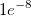

関連する動画はこちら
関連する動画はこちら
 関連する動画はこちら
関連する動画はこちら
X/Yの検索テーブルは、フィットを実行した後のフィット曲線から指定した独立変数の値から従属変数の値または指定した従属変数の値から独立変数の値を取得できます。
フィットを行ったら、*FindXfromY* (または、FindYfromX)というワークシートが作成されます。Y (またはX) 値を、新規シートの最初の列に入力すると、X (またはY)値が自動的に計算されます。
フィットツールで出力オプションを変更します。例えば、線形フィットダイアログでは、X/Y検索の項目にチェックボックスがあり、X/Y検索と95%信頼区間を計算するかを指定できます。非線曲線フィットツール(NLFit)では、ドロップダウンで、追加のX/Yの列を指定できます。複数の解がある場合、値は追加の列に追加されます。例えば、モデルで与えられたy値に対して、2つのx値がある場合を考えます。この場合、YからXを検索の項目でX列の数を2と指定します。
一般的に、XからYを検索は、YからXを検索よりも高速です。XからYを検索では、OriginはY値を計算するためにフィットモデルに直接フィットパラメータ値を使います。しかし、YからXを検索の場合、Originは、X~Y方程式を自動的に微分できません。そのため、反復計算による近似値を計算します。アルゴリズムは下記のようになります。
Originは最初に均一な線形曲線を作成します。与えられたY値に対して、それが含まれる範囲を見つけます。例えば、与えられたポイントのY値は、範囲 [yn, yn+1]に入ります。すると、X値は範囲 [xn, xn+1]に入ることが分かります。そして、X = (xn + xn+1) / 2に対応する新しいY値y’が計算されます。計算された y’を使って、範囲 [yn, yn+1] を2つの範囲 [yn, y’] と [y’, yn+1]に分けます。y と y’ が比較され、yが入る範囲を調べます。y と y’ の差が許容値  の範囲内になるまで、このような手順が繰り返されます。
この反復計算法は、YからXを検索で使用されます。Y値に対するX値は元のデータ範囲内でのみ検索できます。
YからXを検索したり、XからYを検索する際に、95%信頼区間を算出するかどうかを選択することができます。
 の場合、X値は
の場合、X値は になります。が、計測範囲内にある場合、の標準偏差
になります。が、計測範囲内にある場合、の標準偏差 は、次のように与えられます。
は、次のように与えられます。
^2}{b^2\sum_{i=1}^n \left(x_i-\bar{x}\right)^2}}")
 はフィットした傾き、
はフィットした傾き、 
 はデータポイント数、は標本分散、
はデータポイント数、は標本分散、  と
と はそれぞれXとYの平均値を示します。 が、計測範囲外にある場合、の標準偏差は、次のように与えられます。
はそれぞれXとYの平均値を示します。 が、計測範囲外にある場合、の標準偏差は、次のように与えられます。
^2}}")
\times 100\%") の信頼区間を持つX値は以下のように計算されます。
の信頼区間を持つX値は以下のように計算されます。